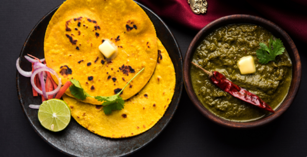
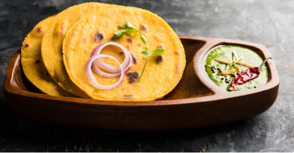

Simple, warm and full of flavour
Punjab is a land of warmth, culture, and strong traditions. It is known for its welcoming people, vibrant lifestyle, and deep-rooted heritage.
Food plays an important role in Punjabi culture. Meals are about sharing happiness, creating memories, and bringing people together through rich flavours and traditions.

A warm dish made from mustard greens with deep earthy flavour.

A simple maize bread that perfectly complements saag.
Boil greens, blend them, and cook slowly with butter and spices. This slow cooking gives the authentic Punjabi taste.
This dish represents warmth, tradition, and comfort in Punjabi culture.